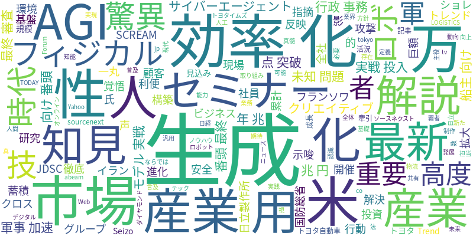

☁️ 今日のトレンドワード

📰 今日のピックアップニュース (10件)
産業用AI市場、2030年24兆円へ拡大！
産業用AI市場が2030年までに24兆円規模に拡大する見込み。トヨタ自動車も巨額投資を行うなど、市場は活況を呈している。本記事では、この成長を牽引する10大トレンドを徹底解説する。
生成AIの活用を学ぶセミナー開催
ソースネクストが、生成AIの最新動向やビジネスでの活用法を学べるセミナーを開催。生成AIの基礎から実践的なノウハウまで、幅広く解説する。
日立、全社員が生成AI活用で知見共有
日立製作所は、グループ全体で約28万人の社員が生成AIを利用。業務で得られた知見を蓄積し、顧客へのサービス向上に繋げる取り組みを進めている。
フィジカルAIで産業ロボが驚異の進化
フィジカルAIの進化により、産業用ロボットが驚異的な効率化を実現。これまで影の存在だった産業ロボが、新たな主役へと躍り出る可能性を示唆している。
AI時代こそ「人の技」が重要
AI技術が発展する現代において、人間ならではの「技」の重要性が再認識されている。全社一丸となって、AI時代に求められる覚悟を行動に移すことの必要性を説く。
AGIの真髄は「未知の問題解決」
AI研究者のフランソワ・ショレ氏は、真の汎用人工知能（AGI）とは、未知の問題を解決できる能力を持つことだと指摘。AGIの定義と未来について言及している。
生成AIで行政事務の効率化・高度化
生成AIの活用により、行政事務の効率化と高度化を目指す。現場の声を反映させた、安全で利便性の高いAI環境の構築が重要視されている。
米軍、AIモデルを実戦投入で軍事利用加速
イランへの攻撃において、米軍が最新のAIモデルを実戦投入した。これにより、米国防総省はAIの軍事利用をさらに加速させる方針を示している。
サイバーエージェントのAI、120万点突破
サイバーエージェントが提供するAIクリエイティブ生成基盤「AI SCREAM」が、累計生成数120万点を突破した。AIによるクリエイティブ制作の普及を示唆する。
船主向けAI「AI番頭」が最終審査へ
JDSCが開発した船主向けAIサービス「AI番頭」が、最終審査に進んだ。AIを活用した物流業界の効率化への期待が高まる。
AI技術の進化は止まらず、産業用AI市場は2030年までに24兆円規模へと拡大すると予測されています。トヨタ自動車をはじめとする大手企業も巨額の投資を行い、その成長を後押ししています。生成AIは、日立製作所が全社員に展開して知見共有を促進したり、行政事務の効率化・高度化に活用されたりと、ビジネスから公共サービスまで幅広く浸透し始めています。また、サイバーエージェントのAIクリエイティブ生成基盤が120万点を突破するなど、クリエイティブ分野でのAIの活躍も目覚ましいです。一方で、AI時代だからこそ人間の「技」の重要性が再認識されており、AIとの共存共栄が模索されています。さらに、米軍がAIモデルを実戦投入するなど、軍事分野でのAI活用も加速しており、AGI（汎用人工知能）の可能性についても議論されています。物流業界ではJDSCの「AI番頭」が最終審査に進むなど、AIは様々な産業で課題解決の鍵となっています。